Ce nouveau modèle vidéo d'IA vient de sortir et il peut générer et éditer n'importe quelle vidéo que vous voulez. C'est en gros Photoshop pour la vidéo, mais en beaucoup plus facile. Regardez ça. J'ai pris une vraie vidéo de mariage et avec une seule consigne, je l'ai déplacée des montagnes à une plage. Ensuite, l'ai fait à nouveau. J'ai changé la couleur du ciel, échangé l'arrière-plan, et j'ai même changé ce que quelqu'un portait à partir d'une seule consigne.
Interface & Outils : Interface de lecteur vidéo et incrustation vidéo du présentateur.
Contenu textuel & Code : Exemple de modification de décor vidéo par IA (passage de la montagne à la plage).
Action / Démonstration : Démonstration visuelle de l'édition vidéo par IA à partir d'une vidéo réelle.
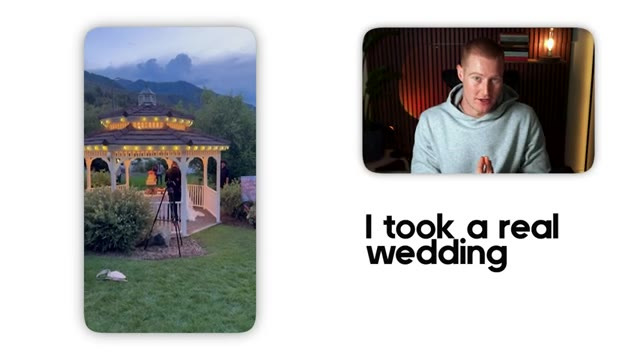
🔍 Agrandir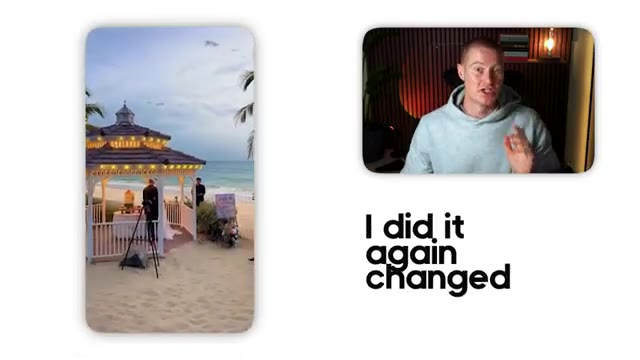
🔍 AgrandirAinsi qu'ici, voici d'autres vidéos que j'ai montées en utilisant ce nouveau modèle en seulement quelques minutes. Donc dans cette vidéo, je vais vous montrer exactement comment utiliser Kling01 pour faire des montages comme celui-ci en quelques secondes. Très bien, entrons dans le vif du sujet. Très bien, les gars. Donc nous allons utiliser Arcads dans cette vidéo pour utiliser Kling01. Donc tout d'abord, ce que vous allez faire, c'est que vous allez sélectionner nouveau projet.
Interface & Outils : Interface web de gestion de projets (Nanana Pro)
Contenu textuel & Code : Vignettes de vidéos verticales avec des aperçus de paysages et de portraits, et une zone de texte pour décrire la vidéo.
Action / Démonstration : Navigation et présentation de l'interface de l'application de montage vidéo par IA.
Vous pouvez voir que j'ai un projet ouvert juste ici. Et laissez-moi vous montrer sur quoi je venais juste de travailler en faisant des tests avec ceci avant de filmer réellement cette vidéo. J'ai donc créé ceci juste ici. Voici donc la première vidéo que j'ai générée. Parfois le monde bouge, et vous apprenez simplement à bouger avec lui.
Interface & Outils : Interface web d'un outil de génération vidéo par IA (type Kling AI ou plateforme similaire).
Contenu textuel & Code : Panneau latéral affichant les détails du prompt de génération vidéo ("# SIDEWALK EPOCH...", modèle Kling) et grille de projets.
Action / Démonstration : Le présentateur présente l'interface de son projet et montre un exemple concret de vidéo générée par l'IA.
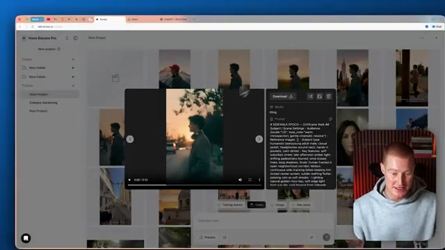
🔍 Agrandir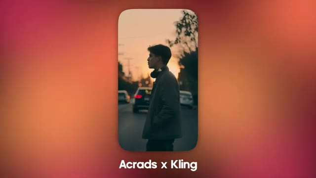
🔍 AgrandirDonc, comme vous pouvez le voir, ça a l'air extrêmement bien. C'est une vidéo très cinématographique de ce type qui marche dans la rue. La caméra le suit fondamentalement. Il reste au milieu du cadre et c'est exactement ce que je voulais que cette vidéo soit. Vous pouvez voir que j'ai utilisé ce prompt très complet pour générer cette vidéo et c'est pourquoi elle est si réussie. Et j'ai utilisé le modèle vidéo Kling pour faire cela.
Interface & Outils : Interface web de génération de vidéo par IA (nano.enicards.ai / Kling) avec incrustation vidéo du présentateur.
Contenu textuel & Code : Prompt textuel détaillé de génération vidéo ("SIDEWALK EPOCH", "Driftframe V6.4", descriptions des scènes, éclairage, mouvements de caméra).
Action / Démonstration : Le présentateur présente et commente le résultat visuel et le prompt de la vidéo générée par IA.
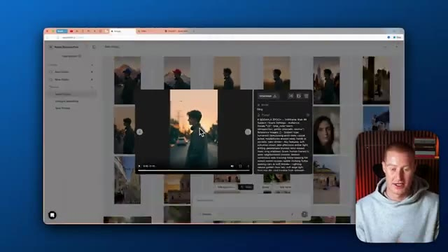
🔍 Agrandir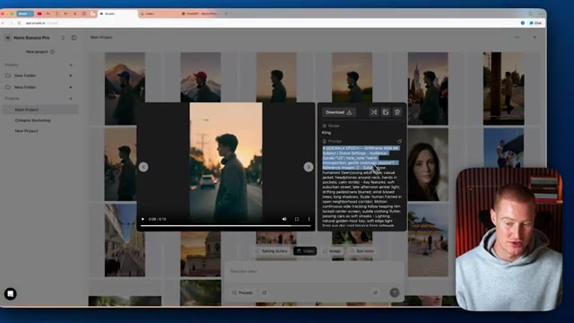
🔍 AgrandirDans cette vidéo, je vais vous montrer un truc pour créer des prompts et des vidéos qui sont aussi précis et de si haute qualité au lieu d'avoir, vous savez, un tas d'erreurs différentes, et ensuite ce que j'ai fait, c'est que j'ai pris cette vidéo et je l'ai transformée en celle-ci où il est dans un champ ouvert. Parfois, le monde bouge. Exactement la même vidéo, vous pouvez voir que le personnage est complètement cohérent, et puis j'ai même fait celle-ci juste ici où il marche et l'arrière-plan le montre dans les montagnes, et encore une fois, j'ai fait ça en un seul prompt en modifiant cette vidéo. Parfois, le monde
Interface & Outils : Application Web de génération de vidéo par IA (Nano Banana Pro / Kling AI).
Contenu textuel & Code : Galerie de projets vidéo, interface de prévisualisation, paramètres de génération et prompts textuels détaillés pour Kling.
Action / Démonstration : Navigation dans l'interface de création et démonstration du résultat vidéo obtenu à partir d'un prompt.
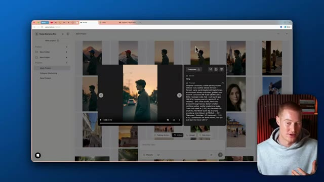
🔍 Agrandir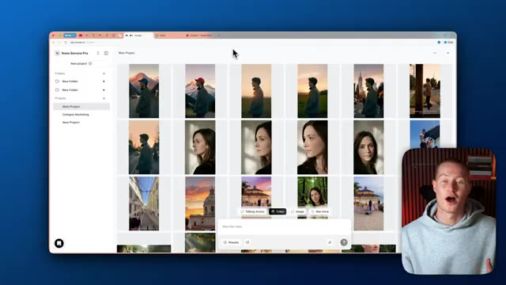
🔍 Agrandirmouvements. Et ensuite, ce que j'ai fait, c'est que j'ai même pris celui-ci et je l'ai encore plus modifié au point où il est de nouveau en train de marcher devant une montagne, mais maintenant il a un chapeau bleu. Parfois, le monde bouge et on apprend simplement à bouger avec lui. Je vais donc vous montrer à quel point il est facile de modifier réellement une vidéo comme celle-ci ou de générer une vidéo à partir de zéro. Tout d'abord, ce que je vais faire, c'est descendre ici et cliquer sur « voir plus » et comme vous pouvez le voir, nous avons l'éditeur vidéo Kling 01 ici
Interface & Outils : Application web Nano Banana Pro et interface de génération vidéo (Kling).
Contenu textuel & Code : Galerie de projets vidéo montrant des variations de personnages et d'arrière-plans générés par IA. [DESC_IMAGE_3] Présentation et démonstration de modifications d'images et de vidéos par IA.
Action / Démonstration : Explications face caméra et analyse conceptuelle des marchés.
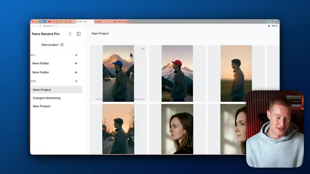
🔍 Agrandir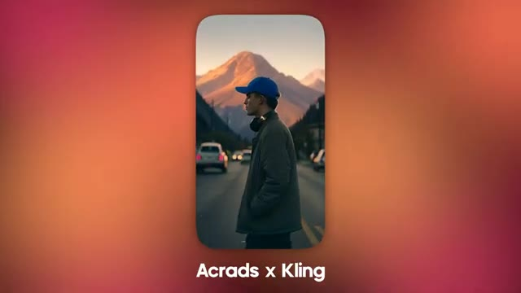
🔍 Agrandirqui est un outil que nous pourremmo utiliser à l'intérieur d'Arcads, l'une des raisons pour lesquelles j'aime vraiment cette plateforme, je vais simplement sélectionner ceci et ensuite ce que je pourrais faire, c'est que je pourrais télécharger n'importe quelle vidéo et ensuite je peux y apporter des modifications. Pour les besoins de la cause, téléchargeons réellement une vraie vidéo que j'ai prise lorsque j'étais en vacances, ce n'തല്ല pas une vidéo générée par IA et je vais vous montrer exactement ce que je veux dire. J'ai donc cette vidéo juste ici, qui est de ce château lorsque j'étais réellement à Lisbonne, au Portugal, ou ce bâtiment. Je ne sais pas si c'est nécessairement un château, mais cela a l'air vraiment cool. Et ce que je veux faire, c'est que je veux modifier cette vidéo pour y rendre le temps ensoleillé à l'extérieur et peut-être
Interface & Outils : Application Web Arcads (plateforme de génération et d'édition vidéo).
Contenu textuel & Code : Galerie de projets vidéo avec vignettes et options d'édition (Talking Actors, Video, Image, Video editor).
Action / Démonstration : Sélection d'une option de téléchargement et d'édition de vidéo au sein de la plateforme Arcads.
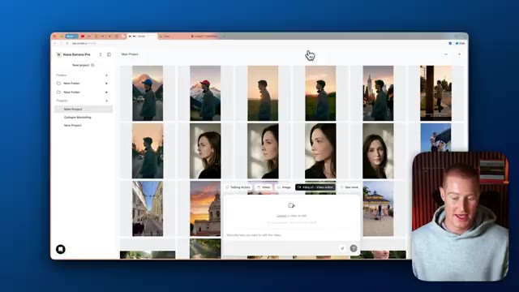
🔍 Agrandiravoir un coucher de soleil. Je veux qu'il ait l'air un peu plus esthétique au lieu d'avoir l'air si sombre et lugubre ici. Je vais vous montrer à quel point il est facile de faire une telle modification. Très bien. La première chose que je vais faire, c'est simplement télécharger cette image. Et encore une fois, assurez-vous d'utiliser cet outil de montage vidéo ici qui est Kling 01, et ensuite je vais simplement décrire le changement que je veux apporter à cette vidéo, je vais lui donner un prompt aussi simple que celui-ci : rendre le ciel ensoleillé au coucher du soleil, garder tout le reste pareil. Et ce que je vais faire, c'est m'assurer que la durée de sortie ici est de 10 secondes, et ensuite je pourrais changer le nombre de générations de vidéos que je veux, allons-y simplement et commençons par une parce que je pense que cela devrait suffire, donc je suis
Interface & Outils : Interface web Nano Banana Pro / Kling AI (éditeur vidéo)
Contenu textuel & Code : Menu de téléchargement de fichiers, interface de grille de projets et options de paramètres d'outils (durée, générations).
Action / Démonstration : Téléchargement d'une image/vidéo de coucher de soleil et préparation de l'édition avec un prompt textuel.
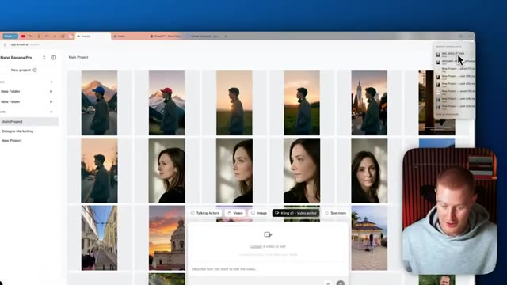
🔍 Agrandir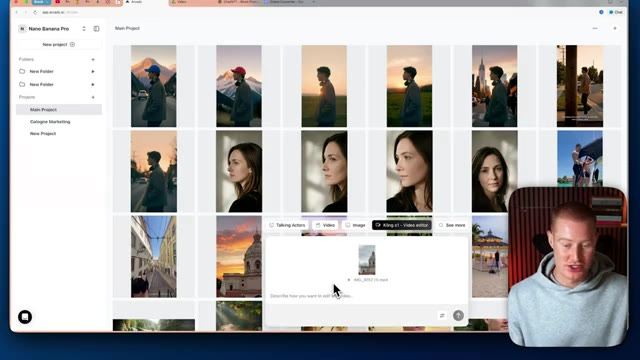
🔍 Agrandir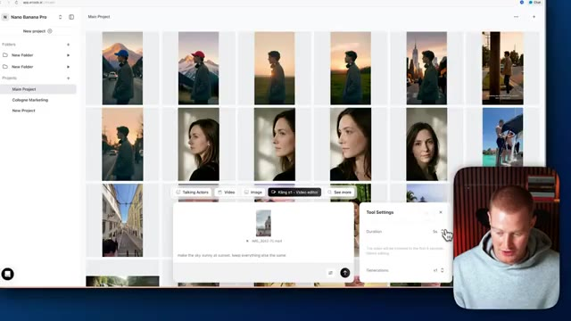
🔍 Agrandiron va envoyer ça et Kling et Luma vont commencer à construire notre vidéo, laissez-moi y revenir dans une seconde. Très bien. Et juste quelques minutes plus tard, cette vidéo a été générée. Waouh. Exactement la même vidéo. Vous pouvez voir que c'est exactement le même sujet ici. C'est le même bâtiment. Cependant, l'arrière-plan est juste ce coucher de soleil maintenant, au lieu d'être cette ambiance sombre et nuageuse de la vidéo d'origine. Et on ne peut même pas deviner que c'est généré par IA les gars. C'est tellement fou. Et je veux que vous réalisiez à quelle époque nous vivons maintenant. Nous vivons à une époque maintenant où vous pouvez éditer vos
Interface & Outils : Interface web de génération vidéo par IA (type Kling / Luma ou similaire).
Contenu textuel & Code : Fenêtre de lecture vidéo avec barre de progression (0:00/0:05), boutons de téléchargement et panneau latéral affichant le prompt textuel « make the sky sunny at sunset, keep everything else the same ».
Action / Démonstration : Le présentateur commente le résultat généré par l'IA et montre l'interface de l'outil.
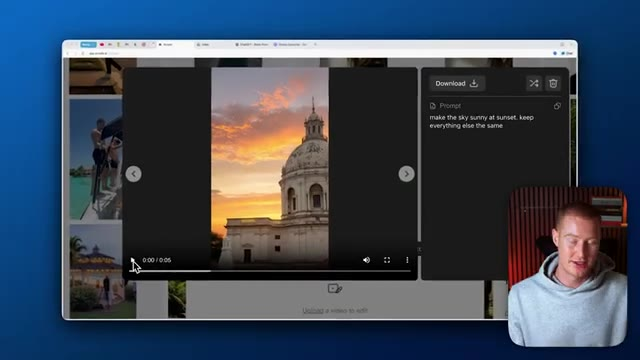
🔍 Agrandirdes vidéos. Comme à l'époque où l'on pouvait modifier Photoshop et retoucher quelque chose pour le rendre réel et que personne ne savait que c'est faux et qu'on peut faire exactement la même chose avec les vidéos IA maintenant. C'est un peu fou et un peu effrayant. En voici un autre que j'ai généré juste pour le faire. Je voulais voir à quoi en ressemblerait un autre. Même le zoom arrière, vous pouvez voir que le zoom arrière a exactement le même aspect, mais le background est la seule chose qui a changé. Très bien, je vais donc vous montrer comment vous pouvez créer cette même vidéo ici à partir de zéro en utilisant l'IA, puis y apporter des modifications pour qu'elle ait ce changement de décor en arrière-plan. La première chose que je vais donc faire, c'est de venir sur ce GPT personnalisé que mon ami Rourke m'a donné. C'est le meilleur dans le
Interface & Outils : Navigateur web affichant une application de génération/modification vidéo par IA.
Contenu textuel & Code : Interface utilisateur web, lecteur vidéo, boutons de téléchargement et panneaux de texte de type prompt IA.
Action / Démonstration : Navigation et démonstration de clips vidéo modifiés ou générés par intelligence artificielle.
entreprise lorsqu'il s'agit de créer des vidéos avec l'IA. Et ce que nous allons faire, c'est simplement expliquer ce que nous voulons créer. Alors, laissez-moi faire cela dès maintenant. Je veux que vous créiez un prompt pour une vidéo cinématographique. Un gars qui marche dans la rue, la caméra le suit pendant qu'il marche et c'est un plan de profil latéral avec lui directement au milieu du cadre. Je veux que cela ait une ambiance cinématographique et moody. Très bien, c'est donc le prompt que je vais donner à ce GPT.
Interface & Outils : Navigateur web affichant l'interface de ChatGPT avec un GPT personnalisé.
Contenu textuel & Code : Page d'accueil de "Block Prompt GPT" avec un champ de saisie de texte en bas ("Prompt anything").
Action / Démonstration : Le présentateur s'apprête à saisir un prompt pour générer une vidéo cinématographique.
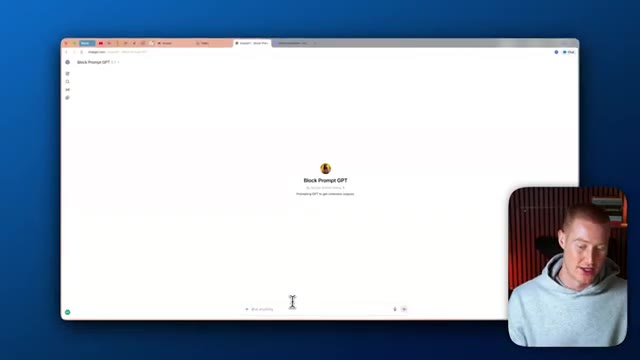
🔍 AgrandirEt ce qu'il va faire, c'est qu'il va cracher ce prompt hyper spécifique qui est spécifique pour ces outils de génération de vidéo comme Kling et Arcads. Très bien, et voici notre prompt super spécifique. Ça a l'air un peu fou, donc n'y prêtez pas attention. Nous allons juste coller ceci dans Arcads, mais vous pouvez voir qu'il est même dit, genre, il nous donne un dialogue ici. Il détaille même l'éclairage, l'objectif et la mise au point de la caméra. C'est super spécifique, et c'est comme ça que vous pouvez obtenir de très bons résultats comme ceux que j'ai montrés dans cette vidéo. Donc ensuite, ce que je vais faire, c'est que je vais revenir sur Arcads, cliquer sur vidéo.
Interface & Outils : Navigateur web affichant une interface de type ChatGPT / générateur de prompts.
Contenu textuel & Code : Texte détaillé de prompt vidéo incluant des instructions de cadrage, d'éclairage, de mouvements de caméra et d'ambiance sonore.
Action / Démonstration : Affichage et lecture d'un prompt hyper spécifique destiné aux outils de génération vidéo comme Kling et Arcads.
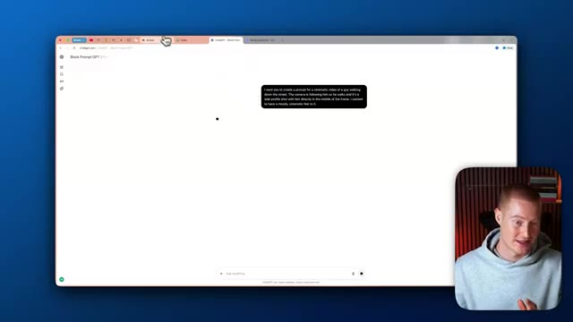
🔍 Agrandir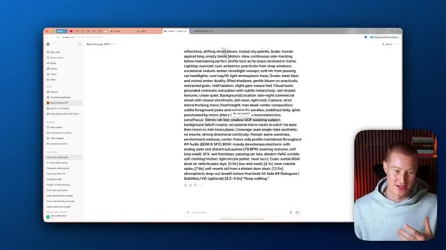
🔍 AgrandirJe vais décrire ma vidéo et simplement coller ce prompt. Et ensuite, ce que je pourrais faire, c'est en fait cliquer sur ce petit outil ici et changer le modèle à utiliser. Kling 2.6 vient de sortir au moment de cette vidéo. Et il est vraiment bon pour ces plans de type cinématographique comme celui que je viens de vous montrer. Donc je vais sélectionner ce modèle, mais nous pourrions aussi utiliser VO 3.1 ou Sora 2 Pro.
Interface & Outils : Application Web de génération de vidéo (Nano Banana Pro / Kling AI)
Contenu textuel & Code : Texte descriptif détaillé (prompt) pour la génération vidéo et menu des paramètres vidéo affichant le modèle Kling 2.6, le format 9:16 et la durée.
Action / Démonstration : Configuration d'un prompt textuel et sélection des paramètres de modèle pour la génération de plans cinématographiques.
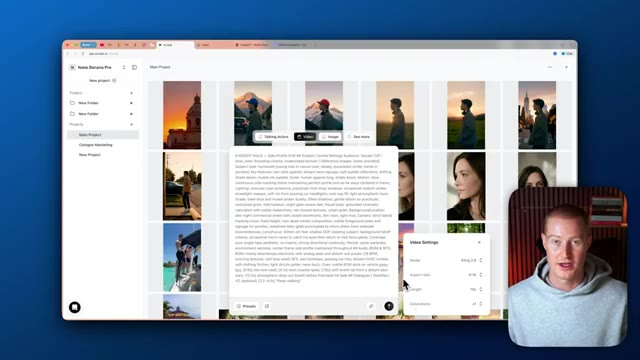
🔍 AgrandirEt ensuite, je vais changer le format d'image pour du neuf par seize. Donc, c'est dans ce style que j'ai montré. Ça va être une vidéo de 10 secondes. Et ensuite, nous pourrons changer la sortie. Faisons trois générations de ceci pour choisir notre préférée. Je vais donc envoyer ça à Arcads et revoyons ça dans un instant. Très bien, voici donc le résultat que nous avons obtenu, et ensuite, je vais y apporter quelques modifications pour éditer notre vidéo, pour ainsi dire.
Interface & Outils : Application web Arcads (générateur de vidéo par IA)
Contenu textuel & Code : Paramètres de génération vidéo : modèle (Kling 2.0), format d'image (9:16), durée (10s), nombre de générations (x3), ainsi qu'une invite textuelle détaillée.
Action / Démonstration : Configuration des paramètres de format d'image, de durée et de nombre de générations dans l'interface d'Arcads.
Continuez à marcher. Donc c'est tout simplement ce type qui marche dans la rue. Il reste au milieu de notre cadre. C'est vraiment très sombre. J'ai compris que je voulais un plan vraiment sombre. Donc ce que je vais faire, en fait, c'est que je vais télécharger cette vidéo et ensuite je vais la modifier pour qu'elle ne soit plus si sombre.
Interface & Outils : Application web Kling AI (navigateur web, lecteur vidéo, panneau de configuration des prompts et tableau de bord des projets).
Contenu textuel & Code : Paramètres de génération vidéo, modèle Kling, prompt textuel détaillé ("MOODY WALK - Side-Profile Drama"), ratio 9:16 et vignettes de vidéos d'IA.
Action / Démonstration : Navigation dans l'interface de Kling AI, lecture d'une vidéo générée et examen des détails du prompt et des paramètres de génération.
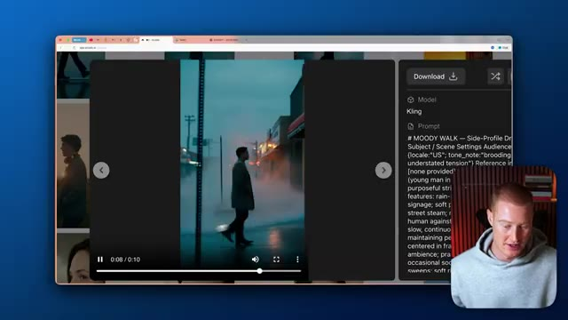
🔍 Agrandir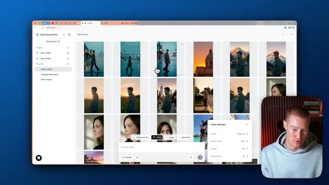
🔍 AgrandirEn fait, je veux que ce soit une ambiance joyeuse et peut-être introspective. Donc ce que je vais faire, c'est que je vais à nouveau sélectionner Kling01 Video Editor. Ensuite, je vais venir ici. Je vais simplement glisser notre vidéo, puis je vais décrire mes modifications ici. Très bien, alors voici le prompt que je vais donner à notre GPT. Je veux que tu crées un prompt pour une vidéo cinématographique d'un gars qui marche dans la rue.
Interface & Outils : Nano Banana Pro / Application web d'IA, Kling v1 Video Editor, et interface de ChatGPT.
Contenu textuel & Code : Grille de vignettes vidéo générées par IA, panneau d'édition vidéo avec option de téléchargement et zone de saisie de texte pour un prompt de génération de vidéo.
Action / Démonstration : Sélection de l'outil d'édition vidéo Kling v1 et saisie des instructions de modification de la vidéo.
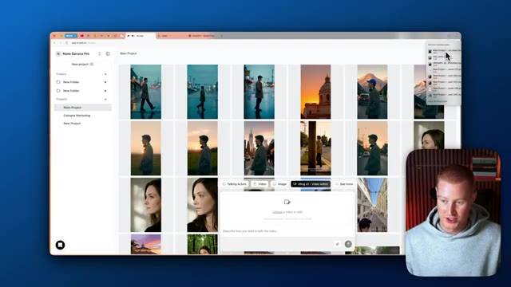
🔍 Agrandir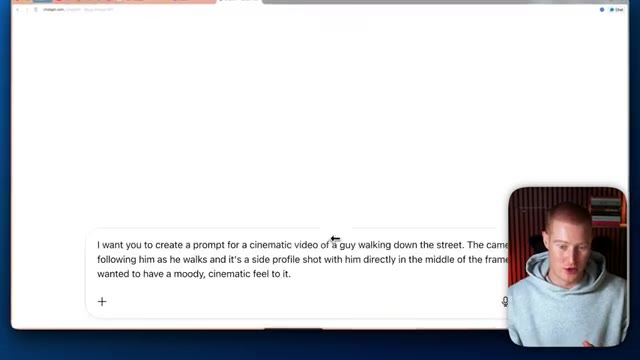
🔍 AgrandirLa caméra le suit pendant qu'il marche et c'est un plan de profil de lui directement au milieu du cadre. Je veux que ça ait une ambiance cinématographique un peu sombre. Donc c'est le prompt que je vais donner à notre GPT et maintenant il va nous concevoir un prompt vraiment spécifique à donner à Cling. Très bien, c'est parti. On a un prompt vraiment, vraiment spécifique. Il détaille même, vous savez, le dialogue qu'on veut avoir. Il détaille la caméra qu'on veut utiliser, l'objectif qu'on veut utiliser, tout ça ainsi que l'éclairage. Donc je vais copier ça. Je vais ensuite venir sur notre vidéo ici. Je vais coller ça et je vais m'assurer d'avoir Cling 2.6 comme sortie ici. Et ensuite, faisons juste une vidéo de cinq secondes et je vais
Interface & Outils : Navigateur web affichant l'interface de ChatGPT et l'application web de génération vidéo Nano Banana Pro.
Contenu textuel & Code : Un prompt textuel descriptif pour IA vidéo ("a cinematic video of a guy walking down the street") et un prompt technique détaillé généré par le GPT personnalisé.
Action / Démonstration : Saisie et génération d'un prompt textuel détaillé destiné à un outil de création de vidéo par IA.
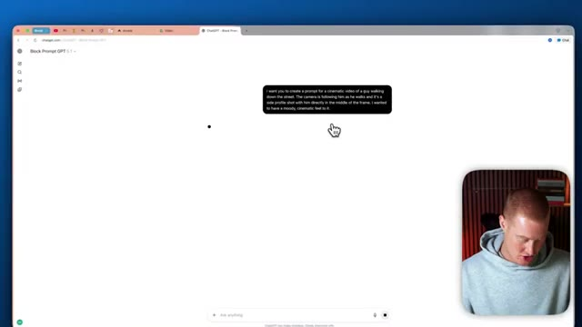
🔍 Agrandir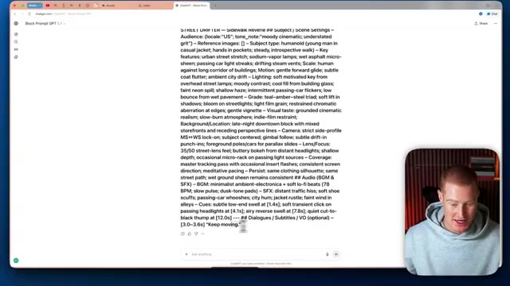
🔍 Agrandir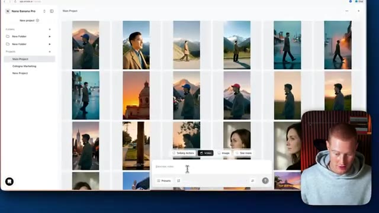
🔍 Agrandirvas-y et envoie ça à nos chats. Très bien. Alors voici le résultat qu'on a obtenu. Continue d'avancer. Donc tu peux voir que c'est notre personnage qui marche simplement dans la rue. C'est un plan vraiment cinématographique. Ça a l'air vraiment sombre et mystérieux. On dirait un truc que tu verrais dans un film dramatique ou quelque chose comme ça.
Interface & Outils : Application web de génération vidéo par IA (Kling AI).
Contenu textuel & Code : Un prompt textuel descriptif pour la vidéo intitulé "# STREET DRIFTER - Sidewalk Reverie".
Action / Démonstration : Le présentateur commente le résultat visuel de la vidéo générée par l'IA et examine le prompt associé.
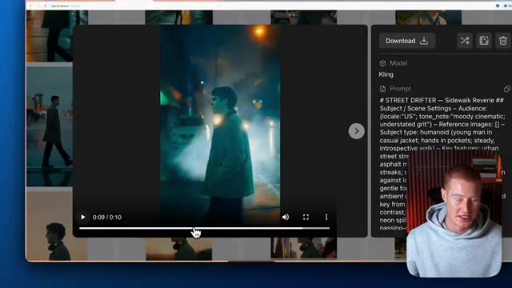
🔍 AgrandirDonc ce que je vais faire maintenant, allons-y, téléchargeons ceci et créons différentes versions de cela. Je veux que l'arrière-plan ait, vous savez, des montagnes ou quelque chose comme ça, ou je veux que ça ait l'air plus léger et chaleureux au lieu de cette scène sombre. Essayons ça maintenant. Donc ce que je vais faire encore une fois, je vais venir et cliquer sur l'éditeur vidéo de Kling01. Je vais ensuite télécharger cette vidéo et je vais décrire mes changements. Très bien. Donc je vais lui donner ce prompt basique, je vais juste dire de changer l'ambiance pour que ça ait l'air chaleureux et lumineux et pas si sombre et ensuite à partir de là, une fois que j'obtiendrai le résultat suivant, je vais ensuite apporter des modifications au décor et à l'arrière-plan. Très bien, donc voici le résultat, vous pouvez voir que ça a l'air beaucoup plus chaleureux, ça a
Interface & Outils : Application web de génération et d'édition vidéo par IA (Nano Banana Pro / Kling AI).
Contenu textuel & Code : Grille de projets vidéo, vignettes de scènes générées, options d'édition et prompt textuel de modification de scène.
Action / Démonstration : Sélection d'une vidéo et préparation d'une modification pour rendre l'ambiance plus claire et chaleureuse.
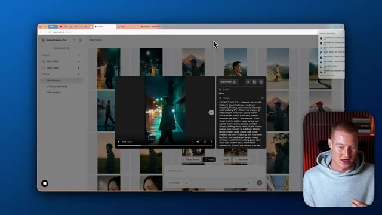
🔍 Agrandir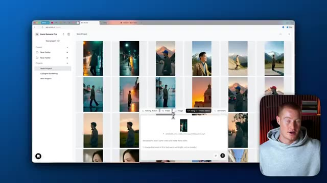
🔍 AgrandirDes tons chauds provenant de ces lampadaires ici, cependant, allons-y, faisons en sorte que ce soit le jour maintenant, je ne veux pas que ce soit sombre et je ne veux pas que ce soit sombre, alors allons-y simplement et faisons en sorte que ce soit en plein jour. Ce que je vais faire encore une fois, je vais télécharger ceci ici et dire : prends cette vidéo exacte et fais en sorte que ce soit le jour avec un ciel bleu dégagé, et je dis qu'au lieu de le faire dans la rue, fais en sorte qu'il soit au milieu de nulle part avec des montagnes en arrière-plan, très bien, alors juste comme ça, nous avons maintenant ce même personnage exact avec les mêmes mouvements exacts ici, mais il est maintenant
Interface & Outils : Interface web d'Arcade (arcads.ai) pour l'édition et la génération de vidéos par IA.
Contenu textuel & Code : Prompts textuels pour l'édition de vidéos ("Let's take this exact same video and make these edits", "take this layout and make it as if in daytime").
Action / Démonstration : Saisie et application d'un prompt pour transformer l'ambiance nocturne d'une vidéo en scène de plein jour.
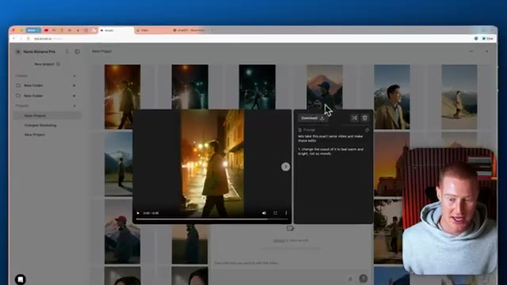
🔍 Agrandir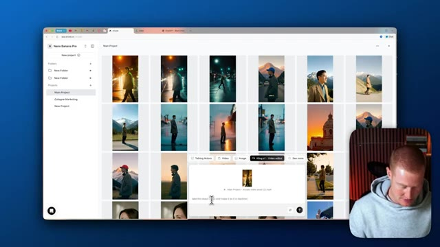
🔍 Agrandiren train de marcher en plein jour et il y a une montagne en arrière-plan exactement comme nous l'avons demandé, les gars, c'est comme ça qu'on monte des vidéos en utilisant Kling 01 à l'intérieur d'Arcads, si vous avez tiré de la valeur de cette vidéo, laissez un pouce bleu, faites-moi savoir ce que vous en pensez dans les commentaires et abonnez-vous pour plus de contenu comme celui-ci où j'apprends fondamentalement aux non-techniciens à utiliser l'IA. Non seulement je couvre la façon de faire des vidéos par IA, mais je couvre aussi la façon de coder au feeling et d'utiliser l'IA dans tout un tas de domaines différents.
Interface & Outils : Interface web de gestion de projets vidéo (Arcads), navigateur web et YouTube.
Contenu textuel & Code : Miniatures de vidéos générées par IA, projets en grille et bannières de chaînes. [DESC_IMAGE_3] Navigation et présentation des vignettes vidéo sur la chaîne YouTube de Brock Mesarich.
Action / Démonstration : Démonstration de l'interface de montage vidéo et incitation à s'abonner à la chaîne.
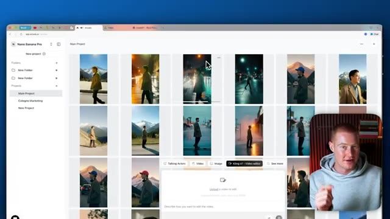
🔍 AgrandirDonc si cela vous semble précieux, assurez-vous d'être abonné à cette chaîne. Cela étant dit, les gars, si vous voulez utiliser Arcad, il y a un lien dans la description pour le faire. Et j'ai hâte de vous voir dans la prochaine vidéo.
Interface & Outils : AUCUNE
Contenu textuel & Code : AUCUN
Action / Démonstration : Le présentateur s'adresse directement à l'audience pour conclure la vidéo et invite à consulter le lien dans la description.